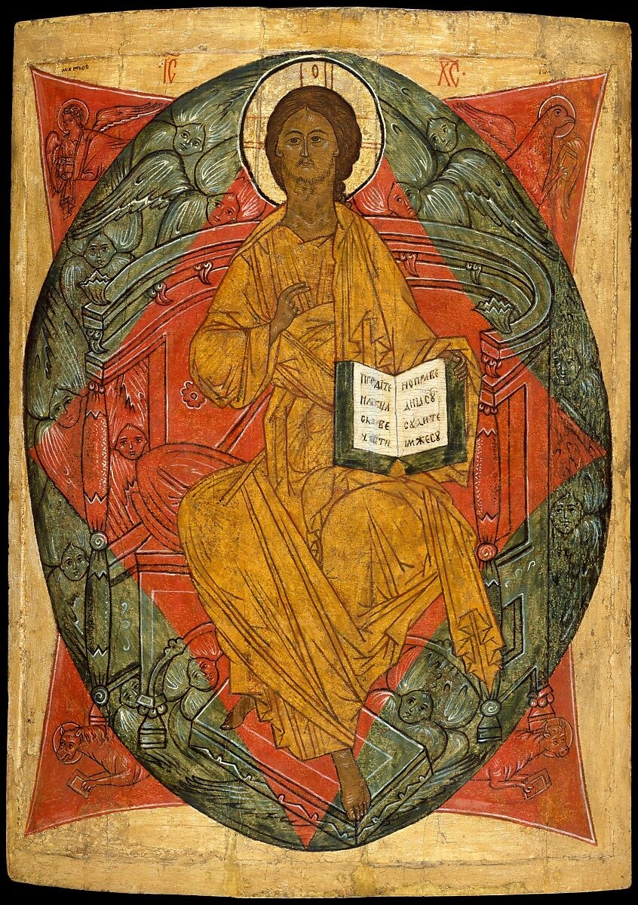
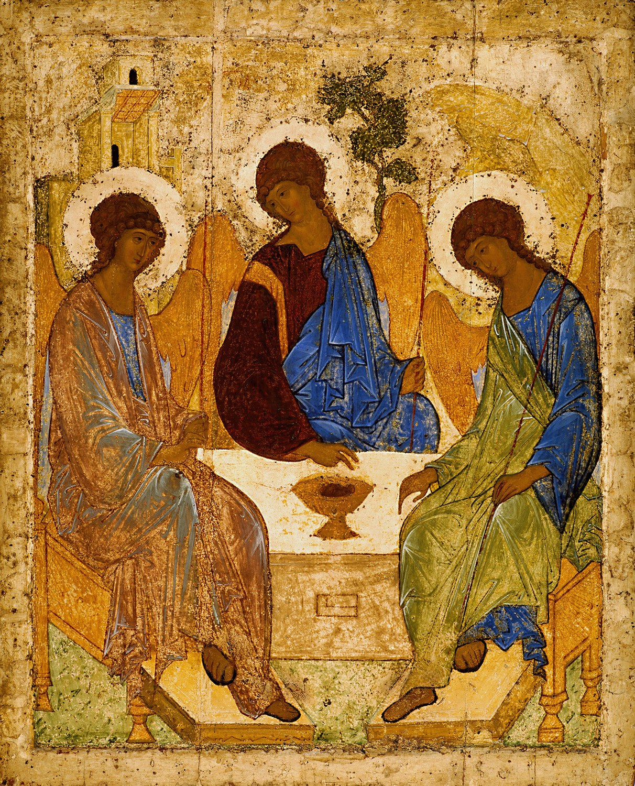
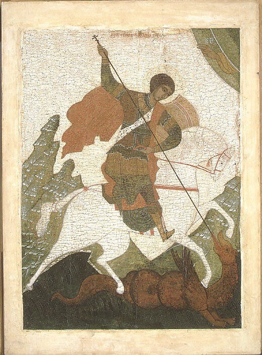
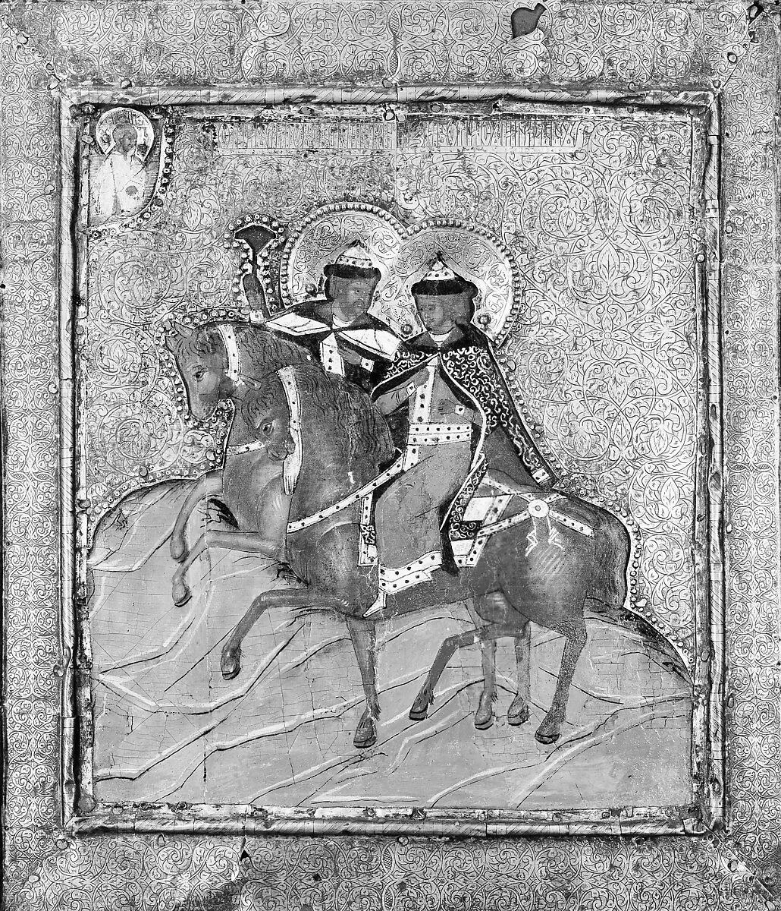

노브고로드계 · 15세기 후반
러시아 이콘화(Russian icon painting)는 하나의 근대적 “미술사조”라기보다 비잔틴 정교회의 이콘 전통을 키예프 루스와 러시아가 계승하여 수세기 동안 발전시킨 종교미술 전통이다. 988년경 키예프 루스의 기독교화 이후 비잔틴의 도상·재료·제작방식이 들어왔고, 노브고로드와 모스크바 같은 중심지에서 색채·선·구도·정신성이 독자적으로 발전했다.
한 세대의 선언적 운동이 아니라 수백 년 지속된 정교회 성상 제작 전통이다.
이콘은 원래 미술관의 그림이 아니라 기도와 전례 속에서 사용되는 성스러운 이미지다.
인체·공간의 자연스러운 재현보다 정해진 성인·사건의 도상과 신학적 의미가 우선한다.
르네상스식 단일 소실점 대신 평면적·비현실적 공간이 사용될 수 있다.
화가의 독창성보다 전통을 충실하게 계승하면서 영적 존재를 현전시키는 것이 중요했다.
| 항목 | 비잔틴 이콘의 기본 문법 | 러시아에서의 전개 |
|---|---|---|
| 신학 | 성인·그리스도·성모의 이미지는 전례와 기도 속에서 사용된다. | 동일한 정교회 신학과 도상 체계를 기본적으로 계승한다. |
| 재료 | 목판 위 바탕층, 달걀 템페라, 금박 등 | 같은 기본 재료 전통을 계승하면서 지역 제작방식이 발전한다. |
| 인물 | 길고 비자연적인 비례, 정면성, 큰 눈, 절제된 표정 | 노브고로드의 강한 윤곽·색채에서 모스크바의 부드럽고 명상적인 유형까지 다양해진다. |
| 공간 | 현실적 원근법보다 신학적·상징적 공간 | 평면성과 역원근법적 효과가 지속되며 건축·산·색면이 도상적 기능을 한다. |
| 핵심 차이 | 동방정교회 이콘의 원형적 중심 | 비잔틴 문법을 보존하면서 러시아 지역의 색채·정서·성인 전통과 결합 |
비잔틴 정교회의 전례·건축·모자이크·이콘 전통이 본격적으로 유입된다.
비잔틴 장인과 지역 화가가 함께 작업하면서 현지 성상 제작 전통이 형성된다.
강한 색채·명료한 윤곽과 단순한 구도를 가진 지역적 이콘 전통이 크게 발전한다.
테오파네스 그리스인과 안드레이 루블료프 등의 활동으로 모스크바가 중요한 중심지가 된다.
조화·부드러운 선·명상적 색채를 통해 모스크바 이콘화의 대표적 이상을 보여준다.
스트로가노프계의 정교한 소형 이콘과 후기 모스크바의 보다 장식적·서구화된 경향이 나타난다.




| 요소 | 의미와 특징 |
|---|---|
| 금빛 배경 | 자연의 햇빛이라기보다 시간과 장소를 초월한 신성한 세계를 암시한다. |
| 큰 눈·길어진 몸 | 육체의 사실성보다 영적 존재와 내적 시선을 강조한다. |
| 평면성 | 르네상스처럼 화면 뒤에 현실 공간을 재현하기보다 성스러운 존재를 화면 앞에 현전시킨다. |
| 역원근법적 효과 | 평행선이 화면 안쪽으로 좁아지지 않고 관람자 쪽으로 열리는 듯한 공간이 나타날 수 있다. |
| 색 | 단순한 자연색이 아니라 신학·전통·도상적 기능을 가진 색채로 사용된다. |
| 반복되는 도상 | ‘새로움 부족’이 아니라 성인의 정체성과 신학 내용을 정확히 전달하기 위한 전승의 원리다. |
| 국가·지역·세부 사조 | 지역적 특징 | 대표 화가·제작자 |
|---|---|---|
| 러시아 · 노브고로드 — 노브고로드파 |
| 제작 공방 중심 · 추가 검토 필요 |
| 러시아 · 모스크바 — 모스크바파 |
| 안드레이 루블료프 |
| 러시아 · 스트로가노프 — 스트로가노프파 |
| 제작 공방 중심 · 추가 검토 필요 |
러시아 이콘화는 서유럽 회화처럼 개별 작가의 창의성을 앞세우기보다, 신학적 규범과 지역 공방 전통 속에서 이미지를 기도와 전례의 매개로 다듬었다.
본문에 이름이 등장하는 주요 화가는 아래처럼 대표작 한 점과 함께 읽어야 한다. 작품은 해당 사조의 핵심 특징을 실제 화면에서 확인하도록 고른 것이다.
세 천사의 조용한 원형 구성이 러시아 이콘화의 영적 조화와 절제를 대표한다.
비잔틴의 엄격한 도상과 격렬한 선이 러시아 지역 전통과 만난다.
길고 우아한 인물과 밝은 색채가 루블료프 이후 모스크바 양식의 세련됨을 보여준다.
전통 도상 안에 점차 서유럽식 얼굴 모델링과 궁정 취향이 스며든다.